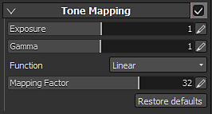

Setting

The Tone Mapping parameters allow to control how the colors will be scaled to be displayed on the screen. Those settings can be useful to redistribute colors because of their wide range of values (which can exceed what the current screen is capable of displaying).
Substance 3D Painter outputs HDR (High Dynamic Range) colors (in Linear Gamma space), but most screens only allow to visualize LDR (Low Dynamic Range) colors. In order to map the HDR range to the LDR range, a conversion has to be done. This is the principle of the tone mapping.
|
Setting |
Description |
|---|---|
|
Exposure |
Scales the HDR space rendering results before any glare effects are applied or tone mapping takes place. |
|
Gamma |
This is the gamma value for gamma correction. |
|
Function |
Function to use to map the HDR range to the LDR range.
|
|
Mapping Factor |
This controls the maximum level of the luminance (brightness) in HDR space that is mapped to the final LDR space in the tone mapping process. Colors brighter than the specified HDR space luminance cannot be represented in LDR space, resulting in blown out highlights. In concrete terms, this value is the luminance (after exposure scaling) in HDR space that maps to the maximum luminance value (1.0) in LDR space. In HDR rendering mode, the lower this value is, the higher the contrast and the greater the likelihood of blown out highlights. Conversely, specifying higher values results in lower contrast and decreases the likelihood of blown out highlights. In LDR rendering mode, when a remapping to HDR space takes place in order to apply an effect, the luminance range is expanded up to the value specified in Mapping Factor . Conversely, the Mapping Factor luminance is mapped to the maximum LDR luminance during tone mapping. In other words, this specifies the dynamic range scaling factor applied to the LDR rendering results for the application of effects. Setting this to a high value emphasizes bright regions in effects.
Note
This setting will have no effect (it will be ignored) if the function is set to any of the following in HDR rendering mode: Linear , LinearSat or Sensitometric . |